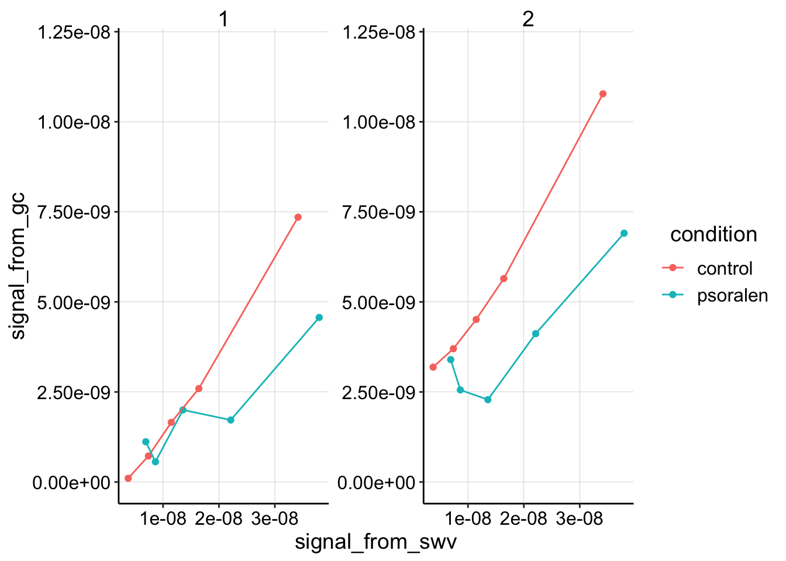
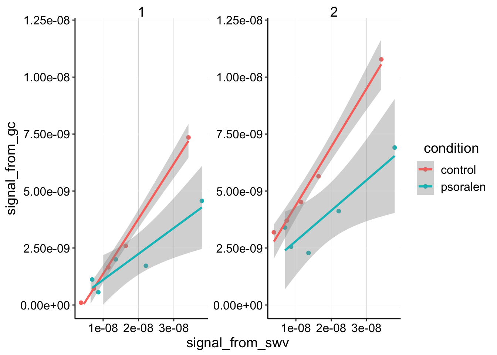
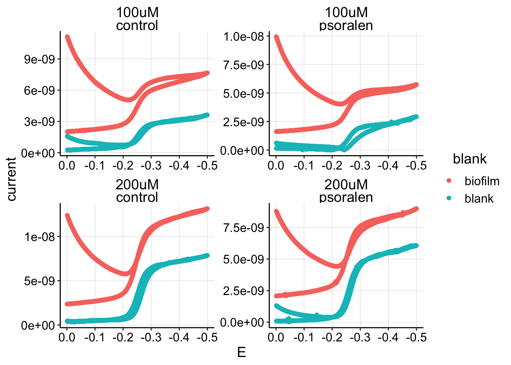
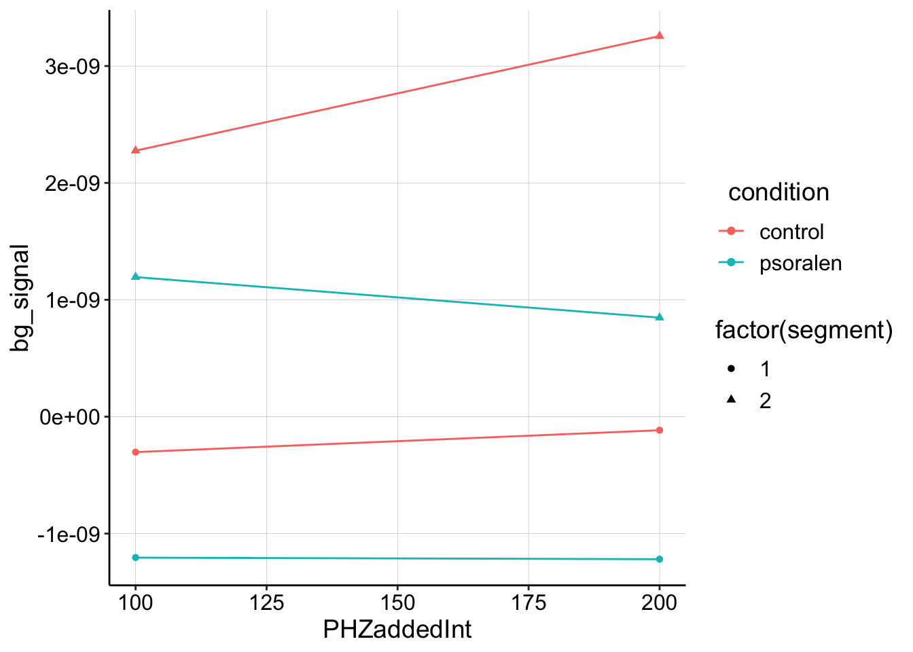

Note the YAML contains specifications for a github document and html. The best way to deal with this is to knit them separately from the knit menu. Otherwise the html has blurry plots and tends to delete the md cached plots unless you tell it to cache everything!
library(tidyverse)
library(cowplot)
library(broom)
library(modelr)
library(viridis)
library(lubridate)
library(knitr)
#knitr::opts_knit$set(root.dir = '/Users/scottsaunders/git/labwork/IDA/12_10_18')
knitr::opts_chunk$set(tidy.opts=list(width.cutoff=60),tidy=TRUE, echo = TRUE, message=FALSE, warning=FALSE, fig.align="center")
theme_1 <- function () {
theme_classic() %+replace%
theme(
axis.text = element_text( size=12),
axis.title=element_text(size=14),
strip.text = element_text(size = 14),
strip.background = element_rect(color='white'),
legend.title=element_text(size=14),
legend.text=element_text(size=12),
legend.text.align=0,
panel.grid.major = element_line(color='grey',size=0.1)
)
}
theme_set(theme_1())
source("../../tools/echem_processing_tools.R")I finally tried the experiment that Jackie has been encouraging me to do for a while. The idea was to treat an IDA biofilm with psoralen (a DNA crosslinker) in an attempt to disrupt DNA CT. If PYO participates in DNA CT in the biofilm, we would expect that psoralen treatment affects the measured \(D_{ap}\).
First let’s just look at the plot of swv signal vs. gc signal. The slope of these lines is proportional to \(D_{ap}\) (\(m\sim \sqrt{D_{ap}}\)).
gc_swv_equil <- read_csv("../Processing/12_04_18_processed_gc_swv_equil.csv")
ggplot(gc_swv_equil, aes(x = signal_from_swv, y = signal_from_gc,
color = condition)) + geom_point() + geom_line() + facet_wrap(~segment,
scales = "free") + ylim(0, 1.2e-08)
This plot is showing how GC collector current scales with SWV current for 5 different concentrations of PYO soaks (25,50,75,100,200uM), and that data has been quantified for segments 1 and 2 of the GC scan. The GC data is being compared to i1 from the SWV.
You can see that the control curves look pretty similar between the segments and look relatively linear. In contrast, the psoralen biofilms look a little different depending on which segment is quantified and it appears like the slope might be less than the control.
Fitting linear models to this plot verifies our intuition, but remember it’s only fitting 5 datapoints…
ggplot(gc_swv_equil, aes(x = signal_from_swv, y = signal_from_gc,
color = condition)) + geom_point() + geom_smooth(method = "lm") +
facet_wrap(~segment, scales = "free") + ylim(0, 1.2e-08)
So, the question is: “Is this difference in slope actually meaningful?”
equil_lm <- gc_swv_equil %>% group_by(condition, segment) %>%
do(tidy(lm(signal_from_gc ~ signal_from_swv, .)))
knitr::kable(equil_lm %>% filter(term == "signal_from_swv"))| condition | segment | term | estimate | std.error | statistic | p.value |
|---|---|---|---|---|---|---|
| control | 1 | signal_from_swv | 0.2415593 | 0.0105240 | 22.953187 | 0.0001811 |
| control | 2 | signal_from_swv | 0.2558664 | 0.0155098 | 16.497120 | 0.0004848 |
| psoralen | 1 | signal_from_swv | 0.1137052 | 0.0247621 | 4.591910 | 0.0194044 |
| psoralen | 2 | signal_from_swv | 0.1335914 | 0.0340230 | 3.926509 | 0.0293980 |
Based on this linear model the two slopes are actually different. So the experiment worked! Right?? Not necessarily.
I decided to explicitly measure the background signal in the solution on a blank electrode. I expected that there would be very little signal…but I was wrong. Here’s a plot of GCs from the biofilms compared to the respective blank scans.
blank_GC_scans <- read_csv("../Processing//12_04_18_processed_blank_GC_scans.csv")
ggplot(blank_GC_scans %>% filter(E < 0), aes(x = E, y = current,
color = blank)) + geom_point() + facet_wrap(PHZadded ~ condition,
scales = "free") + scale_x_reverse() Therefore, the solution phase PYO is likely significant enough to affect the measured biofilm “equilibrium” current.
One option could be to background subtract the biofilm GC curve from the blank. However this assumes \[I_{gc} = I_{biofilm}+I_{solution}\]
This may be a reasonable assumption, but we know during the biofilm soak step, that it seems like biofilm coated electrodes actually show less signal than bare electrodes. Remember that \(I_{gc}\) depends on concentration, but also on \(D_{ap}\). So even if the biofilm does sequester a high concentration of PYO near the electrode, if it is diffusing slowly it will not contribute in the same way as the solution PYO.
Therefore, it seems dangerous to background subtract and draw conclusions from that data, but just for fun let’s do exactly that.
From quantifying the curves in the above plot, we can now plot the background subtracted GC signal vs. added soak [PYO]. Ideally we would use the background subtract the SWV signal, but the signal isn’t that easy to work with, and isn’t worth it right now. Also unfortunately, we only have background signals from the blank electrode for two datapoints from each condition…so we’re just going to connect two points with a line.
gc_bgsub_swv <- read_csv("../Processing/12_04_18_processed_gc_swv_bgsub.csv")
ggplot(gc_bgsub_swv, aes(x = PHZaddedInt, bg_signal, color = condition,
shape = factor(segment))) + geom_point() + geom_line()
Obviously, this is pretty sparse data, but it does show that the control biofilm shows a positive slope with increasing PYO for segments 1 and 2, while the psoralen treated biofilm shows zero or negative slope. If this were an accurate reflection of the biofilm GC signal, it would suggest that the control has a measureable \(D_{ap}\), while the psoralen treated biofilm doesn’t really have a slope at all and therefore \(D_{ap}\) is significantly reduced.
This is definitely thought provoking, but it will require further experiments to make any legitimate point.
Thankfully, due to my paranoia about this experiment, I did the 12_10_18 experiment. This experiment seemed to indicate that we can actually take GC measurements during the 1 hour equilibration to get measurements at multiple concentrations. Taking the same approach with psoralen biofilms will make it easier to get quality data.